শাহরিক
প্রথমত
শত বিপত্তি সত্ত্বেও আমি শান্তার কথা লিখবো, কারণ এই কথাগুলা লিখে রাখা জরুরি। একটা সময় আসবে, যখন এইসব কথা পুনরাবৃত্ত করতে শত শত মৃতদেহ ভীড় করবে, তারা হাত বাড়ায়ে দিবে, কান ছড়ায়ে দিবে, তারা উন্মত্ত হয়ে চিৎকার করবে। তারা মাটির ওপর দাঁড়ায়ে মাটিকে কাদায় পরিণত করবে, এবং সেই কাদা নিজের গায়ে-মুখে মাখবে। তারা জিঘাংসাবশত একে অন্যকে আঘাত করতে থাকবে। অতি দ্রুত সেই কোলাহল তাদের মস্তিষ্কে একটা গাঢ় ডিস্টোপিয়া হয়ে প্রোথিত হয়ে যাবে।
তবু এতে শান্তার কিছুই হবে না, কেননা মেঘের নিচে কোনোদিন সূর্য ঢাকা পড়ে নাই, পড়সে পৃথিবী।
সুতরাং আমি বলবো,
জলাভূমি ও বিবর্ণ সড়ক পার হয়ে সে যেদিন এই শহরে নামবে, সেদিনের আকাশটা হবে থমথমে। নিদারুণ ঝড় হয়ে নেমে আসার জন্য একটা ঘন মেঘ অপেক্ষা করবে, কেবল নামবে না। মিটফোর্ড ঘাটের বুড়ো মাঝি ঘাট ত্যাগ করবে বারবার এবং মিটফোর্ড ঘাটের বুড়ো মাঝি বারবার ঘাটে ফিরে আসবে। বহু বছরের দৃষ্টিতে ও ঘ্রাণে, শ্রুতিতে ও স্পর্শে ব্যর্থ হয়ে শেষপর্যন্ত সে জিহ্বা বের করে দশদিকের স্বাদ নেয়ার চেষ্টা করবে। সেই ইন্দ্রিয়ও তাকে প্রলয়ের বার্তা দিবে, তবু বাতাস থাকবে বীতবেগ। এয়ারপোর্ট রোডে সেদিন কোনো যান চলাচল করবে না, একটা মোহে আচ্ছন্ন হয়ে সবাই চুপচাপ দাঁড়িয়ে থাকবে। শেখেরটেক বারোতে সেদিন চা হাতে মানুষ বসে থাকবে স্তম্ভিত হয়ে। তারা নড়বে না, তারা কোনো কথা বলবে না।
কিন্তু শান্তা এই শহরে নেমে আসামাত্র সবাই তার উপস্থিতি অনুভব করবে। খুব সামান্য, কিন্তু স্পষ্ট একটা অনুভূতি হবে তাদের, যেন স্বপ্নের ভেতর এইমাত্র তারা স্বপ্নের অস্তিত্ব সম্পর্কে সচেতন হলো। তাদের একইসাথে স্বপ্ন থেকে বেরোবার এবং স্বপ্নের আরো গভীরে প্রবিষ্ট হবার একটা ইচ্ছা জাগবে। এক ধরনের দোদুল্যমানতায় ডান-বাম করতে করতে শহরের আনাচে-কানাচে একেকটা অস্থিরতা জন্ম নিবে—ফুটপাথে যারা স্থির দাঁড়িয়ে ছিলো তারা একটু একটু দুলবে, জ্যামে আটকে থাকা বিকাশ পরিবহনের ড্রাইভাররা বারবার অ্যাক্সেলেটরে চাপ দিবে, ডলফিন গলির একটা কাক পা নিচু করে ওড়ার জন্য প্রস্তুত হবে,
আর,
তখন
শান্তা
উচ্চারণ করবে
একটা
শব্দ—
আগুন!
এবং এরই প্রতিক্রিয়াবশত, এই শহর ও শান্তা যথাক্রমে শান্তার মধ্য দিয়ে প্রবাহিত রক্তে এবং এই শহরের মধ্য দিয়ে প্রবাহিত রিকশায় মিশে যাবে।
মধ্যমত
আমি দৃশ্যমান ঘটনার কথা বলবো। শান্তা এই শহরে অবস্থান করার সময় এখানে যা কিছু ঘটবে, আমি তার একটুখানি বলবো।
আমি বলবো সেই দুপুরের কথা, যখন শান্তা আপনমনে এই শহরে হেঁটে বেড়াবে। সে সবাইকে দেখবে, তাকে কেউ দেখবে না।
ইকবাল রোডের একটা চন্দ্রপ্রভা গাছের নিচে শান্তা একটুক্ষণের জন্য দাঁড়াবে, আমি সেই কথা বলবো। কোনো ব্যাখ্যা ছাড়াই সেই রাস্তা দিয়ে তখন উথাল-পাথাল বাতাস বয়ে যাবে। সেই বাতাস মুখে মেখে শান্তা চোখ বুঁজে ফেলবে, স্রেফ শ্বাস নেয়ার আনন্দে সে প্রাণভরে শ্বাস নিবে।
আর সে যখন ঘাড় কাত করে গাছের দিকে তাকাবে, মৃদু গলায় যখন বলবে, ‘আয় ফুল, আয়,’ তখন বৃষ্টির মতো চন্দ্রপ্রভা ফুলেরা নেমে আসতে শুরু করবে।

বৃষ্টির মতো, ঘন বর্ষণের মতো
শেষত
সেই বর্ষণশেষে স্নিগ্ধ একটা বিকাল নামবে, আমি সেই বিকালের কথা বলবো।
সেই বিকালে এই শহরটা শুদ্ধ হবে, এই শহরে বহুদিন কেউ আর কোনো পাপ করতে পারবে না। তাদের খুব ইচ্ছা করবে, প্রিয় মানুষটার হাত ধরে বসে থাকতে।
এবং তাদের ইচ্ছা করবে, একটু বিষণ্ন হতে। অনেক অস্থিরতা ঘটে গেছে মাথার ভেতরে, কত কাল কেটে গেছে তাদের, আয়নায় মুখ না দেখে।
মানুষের ইচ্ছা করে, একটু বিষণ্ন হতে।
তবু, ইকবাল রোড থেকে লালমাটিয়া হয়ে ধানমন্ডি বারো গায়ে মেখে শান্তা যখন রবি সরোবরের উল্টা দিকে একটা হিজল গাছের মতো দাঁড়াবে, পানিতে ঝুপুস করে পড়ার মুদ্রা করবে অথচ ঝাঁপ দিবে না, তখন লেকের গা ছুঁয়ে আসা জলজ বাতাসে তার মন ভালো হয়ে যাবে…